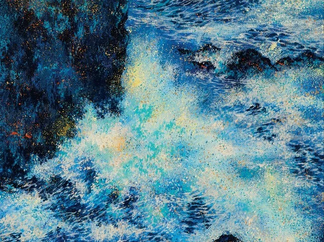

Midnight Drive Live Clip
완료보컬.퍼포먼스 / 촬영 협업
- 아티스트의 싱글 라이브 클립 제작 및 현장 레코딩 진행
- 라이브 영상 1편, 현장 음원 1종
- 오프라인 촬영 + 온라인 편집 공유
함께 좋아하는 친구 3명

고요한 밤, 가장 깊은 곳의
감정을 섬세하게 어루만지는 목소리의 주파수.
지나간 계절의 온기와
텅 빈 공간의 위로를 노래하고 싶은 김루나입니다.
보컬.퍼포먼스 / 촬영 협업
작사.작곡 / 프로듀싱 / 믹싱
3,583
2,593
저장한 사용자가 1K 이상인
플레이리스트의 경우 크레딧 수익화
반응한 사용자가 1K 이상인
플레이리스트의 경우 크레딧 수익화
공유한 사용자가 1K 이상인
플레이리스트의 경우 크레딧 수익화